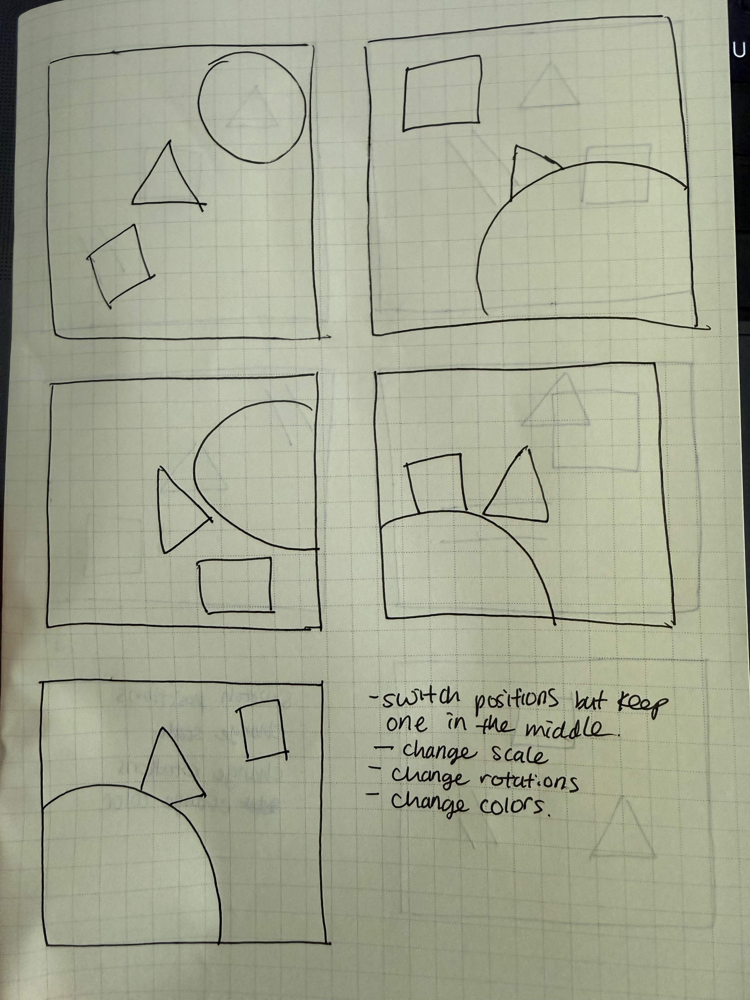

I wanted one shape to remain fixed in the center, while the other shapes could move freely.
I also wanted the shapes to scale differently with each click event, and for random colors to be assigned to both the shapes and the background.
Additionally, I wanted the shapes to slightly overflow outside the frame while still keeping a portion of them visible inside.
